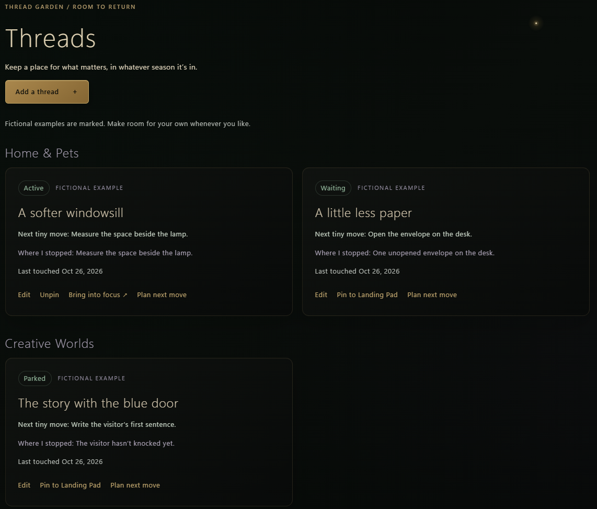
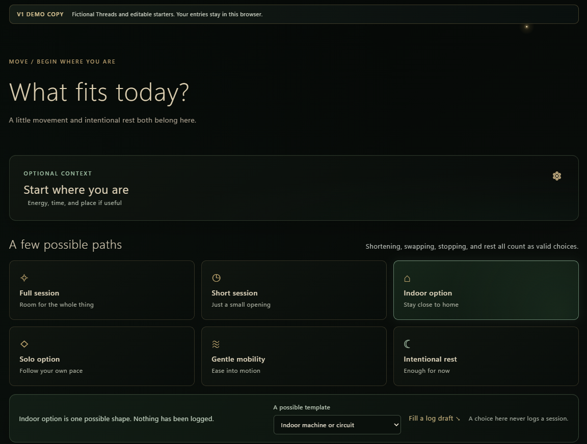
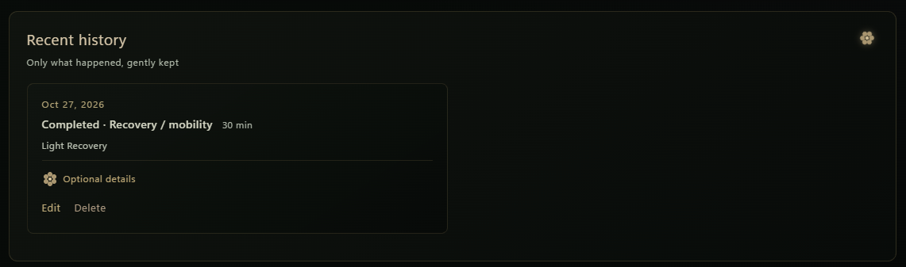
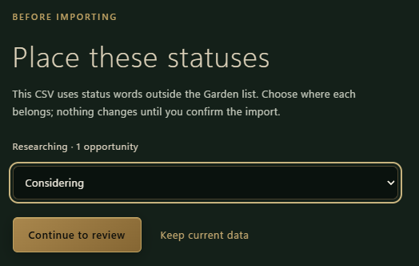
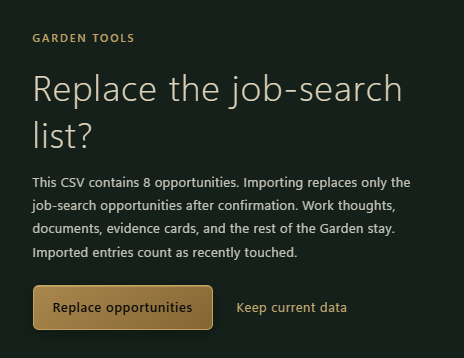
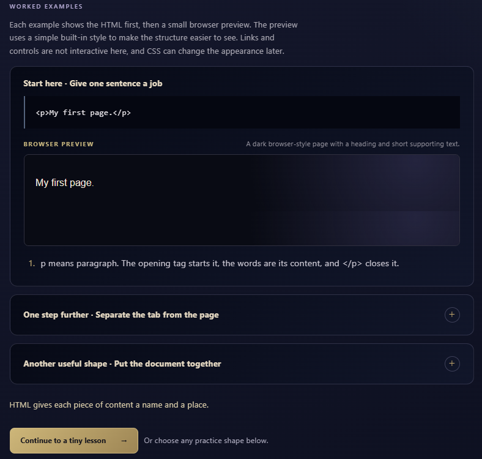
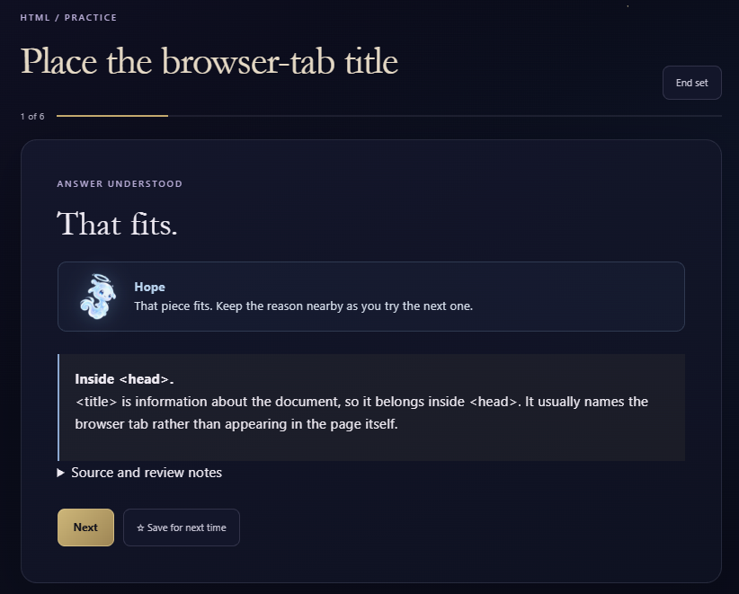

Preserve the return point
Garden Threads retain both a next small move and the user’s stopping point. Items can be Active, Waiting, or Parked without being treated as neglected work.
Case Study · Independent Product Design
Two connected, local-first browser prototypes exploring a simple question: what would personal software feel like if it helped someone return without making them feel behind?
The problem
Many planning and learning tools center accumulation: more tasks, longer streaks, fuller dashboards, and visible evidence of unfinished work. That can make returning after an interruption harder than starting.
I wanted to test a different model. The Garden supports planning, personal organization, work, movement, nourishment, and ongoing projects. The Sky supports short coding practice sessions. Both needed to be useful and structured without turning every pause into a failure state.
The design principle
“Gentle” could not be only a visual style or friendly copy. It had to shape the interaction rules: no streaks, quotas, countdowns, rankings, or artificial completion debt. The prototypes preserve useful context, distinguish plans from confirmed activity, and let unfinished work remain safely unfinished.

Selected design decisions
Garden Threads retain both a next small move and the user’s stopping point. Items can be Active, Waiting, or Parked without being treated as neglected work.
Movement suggestions can create an editable draft, but the history records only what the user explicitly confirms. A possible plan does not silently become a completed activity.
Garden’s job-search CSV flow validates columns and values, lets users map unfamiliar statuses before review, and replaces only the job-search list after explicit confirmation.
Sky practice explains why an answer fits or needs another look. A quick retry can correct the moment without erasing the signal that the concept deserves later independent practice.
Interaction examples




The Sky · learning by doing


Architecture and verification
The Garden and The Sky are independent static sites. They run without an account, server, database, build process, or internet connection. Each app uses its own browser-storage keys, offers versioned JSON export and import, and requires confirmation before replacing saved data.
The Sky currently passes 33 automated logic checks covering content IDs, answer handling, practice selection, state restoration, retries, backup round-trips, content versioning, local lesson routing, and contained-preview protections. Responsive, keyboard, screen-reader, and device checks remain active manual QA work rather than claims of finished certification.
What I learned
This project reinforced that supportive design is built from data models, defaults, error states, navigation, and carefully limited promises—not merely colors and reassuring language. Removing pressure did not mean removing structure. It meant being deliberate about what the system remembers, what it asks of the user, and what it refuses to imply.
This public case study intentionally shows selected decisions and non-sensitive interface examples rather than source code, full data models, or an exhaustive product specification.